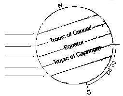
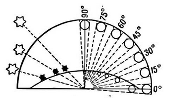
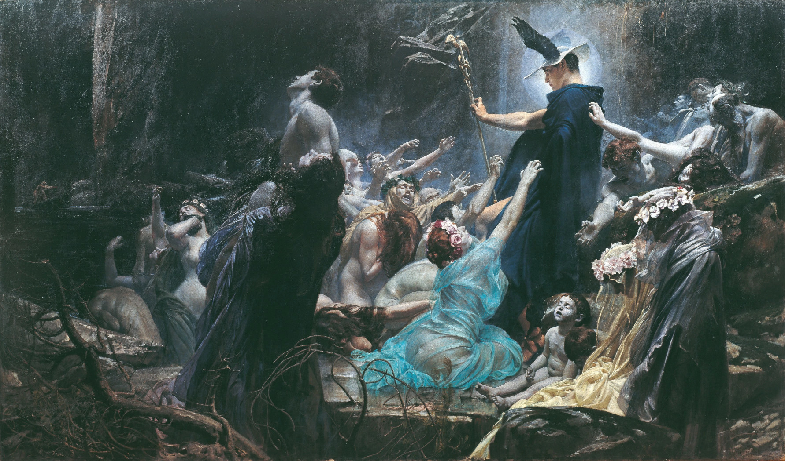
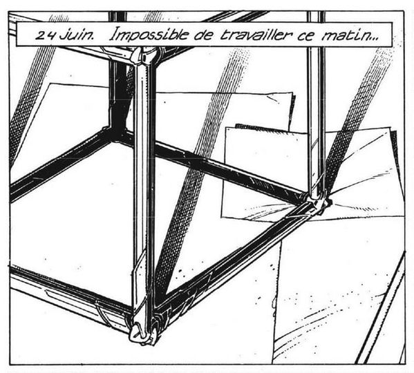

Bootstrapping Units
To make a 1 litre container from a ruler: Fill 10cm x 10cm x 10cm with water.
To make a 1 litre container from 1000 grams: Fill a container with room temperature water, when then container holds exactly 1000 grams(1 kg) of water, it is exactly 1 litre.
To make a 1 gram unit from 1cm: Fill 1cm x 1cm x 1cm with water.
To make a 1 meter from a pendulum: Time 10 full back-and-forth swings, if it takes less than 20 seconds, your string is too short, if it takes more than 20 seconds, your string is too long. A string with a length of exactly 1 metre has a period(one full swing back and forth) of almost exactly 2 seconds.
To make a 10.5cm ruler from a sheet of A4 paper: A4 paper is exactly 21cm wide. Fold it in half perfectly width-wise, the resulting width is 10.5cm.
Submerge an object you know is exactly 1 kg it in a straight-sided container, mark where the water level started and where it ended. The space between those two marks is a 1 litre gauge for that specific container.
- The head of an M10 hex bolt is 1.7cm across.
- The standard height for a doorknob or handle is 90cm.
- A standard medium-sized shirt button is usually 13mm
- A LP record spins at 33 1/3 revolutions per minute, it takes exactly 1.8 seconds for one full rotation.
- If you drop a rock and it takes exactly 0.45 seconds to hit the ground, it has fallen exactly 1 metre.
- Water boils at 100'C and freezes at 0'C.
Astronomy is the study of celestial objects and phenomena.
The Earth
The equinox is the moment when the Sun crosses the Earth's equator, these are the days when the Sun is exactly above the equator, which makes day and night of equal length. The solstice is when the Sun's path in the sky is the farthest north or south from the equator. A hemisphere's winter solstice is the shortest day of the year and its summer solstice the year's longest.

In the Northern Hemisphere the June solstice marks the start of summer: this is when the North Pole is tilted closest to the Sun, and the Sun's rays are directly overhead at the Tropic of Cancer. The December solstice marks the start of winter: at this point the South Pole is tilted closest to the Sun, and the Sun's rays are directly overhead at the Tropic of Capricorn.
equinox solstice equinox solstice
Mar Jun Sep Dec
2022 20 15:33 21 09:14 23 01:04 21 21:48
2023 20 21:25 21 14:58 23 06:50 22 03:28
2024 20 03:07 20 20:51 22 12:44 21 09:20
2025 20 09:02 21 02:42 22 18:20 21 15:03
2026 20 14:46 21 08:25 23 00:06 21 20:50
2027 20 20:25 21 14:11 23 06:02 22 02:43
2028 20 02:17 20 20:02 22 11:45 21 08:20
The Gregorian calendar is a solar calendar designed to maintain synchrony with the mean tropical year. It has a cycle of 400 years (146,097 days). Each cycle repeats the months, dates, and weekdays.
The average year length is 146,097/400 = 365/400 = 365.2425 days per year The mean tropical year 365.2422 days
If society in the future still attaches importance to the synchronization between the civil calendar and the seasons, another reform of the calendar will eventually be necessary. If the tropical year remained at its 1900 value of 365.24219878125 days the Gregorian calendar would be 3 days, 17 min, 33 s behind the Sun after 10,000 years. Aggravating this error, the length of the tropical year is decreasing at a rate of approximately 0.53 s per century. Also, the mean solar day is getting longer at a rate of about 1.5 ms per century. These effects will cause the calendar to be nearly a day behind in 3200. The number of solar days in a "tropical millennium" is decreasing by about 0.06 per millennium. This means there should be fewer and fewer leap days as time goes on.
The Sky
It's lucky that Polaris(the north star) sits bright at the top of the celestial dome, it makes the big dipper a kind of celestial compass pointing to the north star, which always indicate the north for the northern hemisphere.
The Moon
Program to calculate the moon phases:
cc -lm moon.c -o moon && ./moon view raw


A place that no mortal can ever reach.
Every day shift is followed by a night shift, and every night shift by a day shift, so neither will ever get the final word. The real course of immutable history which we all share, then, must be the limit of an infinite number of changes. The history that we all share is the final word once all the work has been done.

Since there will always have been a finite number of human generations following the construction of the first time machine, and since the men of each generation will only work a finite number of shifts during their lives, humans will never be able to write the last of an infinite number of changes. If the last word cannot be had by any mortal, then it must be had by some supernatural entity. It is the thesis of the present interpretation that the final course of history is determined by the will of God. ~
spacetime
- Entropy: Or Irreversibility, a lack of order or predictability, gradual decline into disorder.
- False Vacuum: An hypothetical vacuum(space devoid of matter) that is not entirely stable. If a small region of the universe reached a more stable vacuum, this change would spread.
- Great Filter: With no evidence of intelligent life other than ourselves, it appears that the process of starting with a star and ending with "advanced explosive lasting life" must be unlikely.
- Von Neumann probes: Or Universal Assemblers, A spacecraft capable of replicating itself.
- Final anthropic principle: Intelligent information-processing must come into existence in the Universe, and, once it comes into existence, will never die out.
- Mathematical universe hypothesis: Or Tegmark Universe, our external physical reality is a mathematical structure consisting of starting conditions with rules about how they are to evolve. Any universe that corresponds to a logically coherent mathematical object exists, but universes exist “more”(in some sense) in proportion to their underlying mathematical simplicity.
- Liminality: The quality of ambiguity, or disorientation, that occurs during a middle stage, or a threshold. Liminal places can range from borders and frontiers to crossroads and airports, which people pass through but do not live in.
- Causality: Relationship between a cause and an effect, where the effect is a direct consequence of the cause.
- Eternal Return: A theory that the universe and all existence and energy has been recurring, and will continue to recur, in a self-similar form an infinite number of times across infinite time or space.
- Super now: A type of prediction taking things that are happening now and imagining that the future will be just like now, only “more extreme.”
- Teleology: The study of things that happen for the sake of their future consequences. The fallacious meaning of it is that events are the result of future events.
- Prediction: Statement or claim that a particular event will occur in the future in more certain terms than a forecast.
When you tire of living, change itself seems evil, does it not? for then any change at all disturbs the deathlike peace of the life-weary.